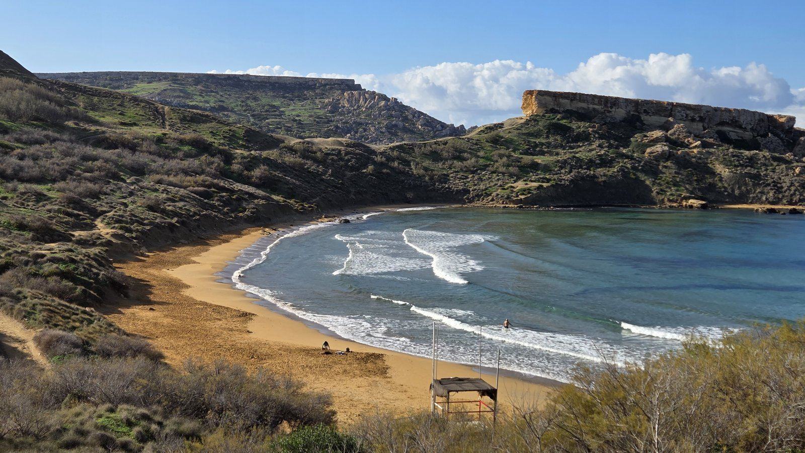
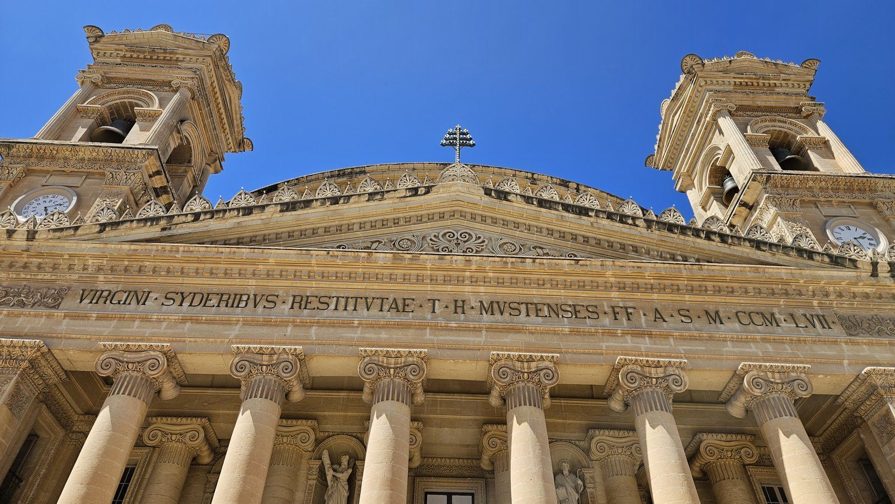
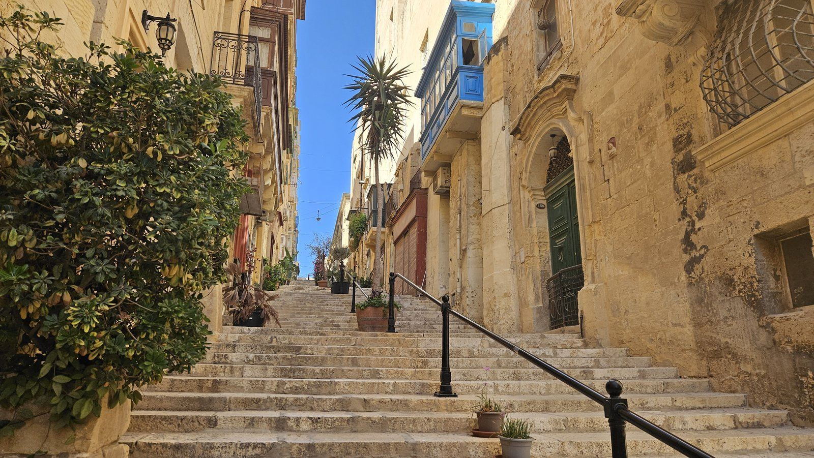
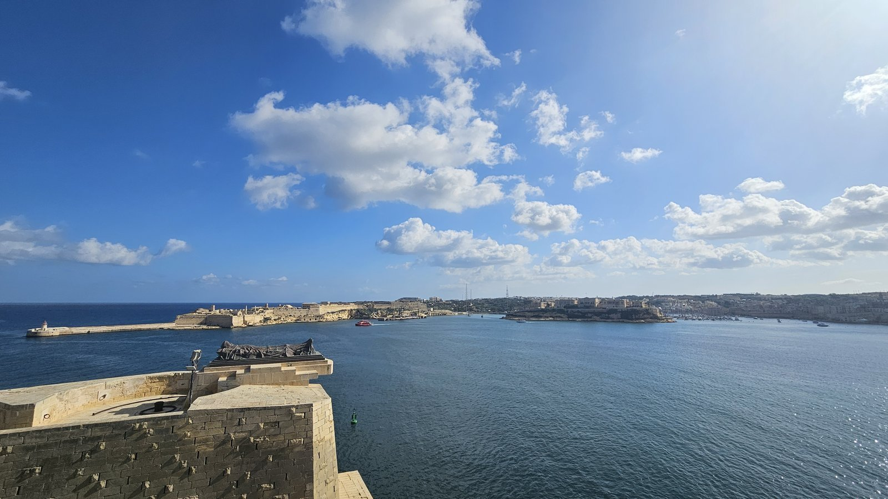
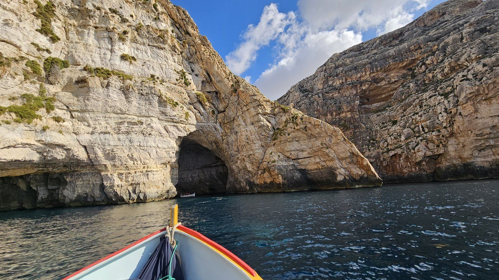

Z cest
Malta osmkrát: zimní pláže, Mdina, Valletta a Bolt místo autobusu
Destinace a úvod
Malta je pro mě jistota na prodloužený víkend. Počasí je parádní i v zimě, všude je kousek a zimní pláže jsou úplně bez lidí – o to mají větší kouzlo. V prosinci 2025 jsem se dokonce smočil v moři.
Má to i druhou stranu: ostrov je velmi zalidněný, autobusy jsou sice levné, ale přesuny trvají strašně dlouho, a jezdí se vlevo.
Na Maltě jsem byl v letech 2012, 2015 a 2022, pak dvakrát v roce 2023 (květen a říjen), v listopadu 2024, v lednu 2025 a v prosinci 2025. Tenhle článek stojí hlavně na pěti posledních cestách.

Letenka
Na Maltu létám z Bratislavy (2023) a z Katowic (2024–2025). Letenky často vycházejí kolem 1 500 Kč (2023–2025).
Pozor na časy letů: bývají často v ranních hodinách. Než koupíte letenku, ověřte si, jestli se v tu dobu na letiště vůbec dostanete.
Salonky
Na letišti na Maltě je při odletu velmi slušný salonek La Valette Club. Chodím do něj s LoungeKey. V prosinci 2025 jsem v něm měl před odletem snídani.
Ubytování
Poslední cesty bydlím v hotelu Ibis v St Paul’s Bay a rád se tam vracím. Nejlepší jsou pokoje v nejvyšším patře s výhledem na moře. Na střeše je bazén, taky s nádherným výhledem na zátoku. Snídaně je spíš průměr. Pokoj se snídaní se dá sehnat od 800 Kč za noc (2025).
V listopadu 2024 jsem bydlel v St Julian’s v hotelu se střešním bazénem s výhledem na Spinola Bay a Portomaso.
Místní doprava
Bolt místo autobusu. Vzdálenosti na Maltě jsou krátké, ale autobusy jedou fakt dlouho. Proto zvažte Bolt. Tip: když aplikaci ještě nemáte a nainstalujete si ji až na Maltě, je pravděpodobné, že dostanete slevu na první jízdy i 50 %. V prosinci 2025 na letišti visela reklama Boltu s uvítacím kódem. Ve více lidech je Bolt někdy i levnější než autobus a určitě o hodně rychlejší. Například od Ibisu v St Paul’s Bay na pláž Riviera Beach jsem jel za 4 EUR (2024).
Autobus je levný, ale na pomalé přesuny se připravte. Na letiště jezdí z St Julian’s linka X2.
Trajekt Sliema – Valletta je nejpříjemnější cesta do Valletty, s panoramatem hradeb z vody. Dřív byl v ceně jízdenky na MHD, v roce 2025 už se platil zvlášť, myslím kolem 3 EUR.
Program po dnech
Tady nejde o jednu cestu, ale o místa, kam se na Maltě vracím.
Riviera Beach a útesy na severozápadě
Trasa: St Paul’s Bay – Għajn Tuffieħa – Ġnejna
Moje nejoblíbenější místo v zimě je pláž Riviera Beach (Għajn Tuffieħa). Na pláž se schází po schodech, nad zátokou stojí strážní věž. V květnu 2023 jsme se tu koupali, v prosinci 2025 jsem tu byl skoro sám. Od pláže se dá jít po útesech směrem k zátoce Ġnejna – skalní útvary, zátoky a průrvy ve skalách.
Mdina a Mosta
Trasa: St Paul’s Bay – Mosta – Mdina
Do Mdiny se vracím skoro pokaždé: hlavní brána, uličky s balkony, katedrála sv. Pavla a vyhlídka z hradeb, ideálně se zmrzlinou. V lednu 2025 tam stál betlém, v prosinci 2025 jsme kolem projeli historickým autobusem.
Cestou stojí za zastávku Mosta s obří Rotundou. Pod ní je podzemní kryt z druhé světové války – vstup do krytu je zdarma, platí se jen vstup do Rotundy.

Valletta a Sliema
Trasa: Sliema Ferries – Valletta – Upper Barrakka – Lower Barrakka
Do Valletty nejradši trajektem ze Sliemy. Ve městě fontána Triton u brány, Republic Street, typické schodovité uličky a hlavně výhledy na Grand Harbour z Upper a Lower Barrakka. V prosinci 2025 bylo město vánoční: strom u Auberge de Castille, betlém, u Tritonu ruské kolo a vánoční trh.


Blue Grotto (říjen 2023)
Trasa: St Paul’s Bay – Wied iż-Żurrieq
Do Wied iż-Żurrieq jsme jeli Boltem a odtud lodí k Blue Grotto – jeskyně, skalní oblouky a tyrkysová voda. Loď stála myslím do 10 EUR na osobu (2023).

St Paul’s Bay a Buġibba
Když nikam nejedu, sedím u pomníku Enea (Monument Enea od Uga Attardiho) – moje oblíbené místo jen tak k posezení. Večer procházka po nábřeží v Buġibbě a Qawře, západ slunce nad zátokou.
Kde jsem jedl
Fins & Gills – Fish & Chips, Triq Toni Bajada, St Paul’s Bay – můj oblíbený podnik. Velké porce kolem 10 EUR (2025), jedna porce klidně stačí pro dva.
Náklady
| Položka | Kdy | Částka |
|---|---|---|
| Letenka (Bratislava / Katowice – Malta) | 2023–2025 | často kolem 1 500 Kč |
| Ibis St Paul’s Bay, noc se snídaní | 2025 | od 800 Kč |
| Bolt Ibis St Paul’s Bay – Riviera Beach | 2024 | 4 EUR |
| Trajekt Sliema – Valletta | 2025 | cca 3 EUR |
| Loď k Blue Grotto | 2023 | do 10 EUR |
| Podzemní kryt v Mostě | 2025 | zdarma |
| Fish & chips, Fins & Gills | 2025 | cca 10 EUR |
| Salonek La Valette Club | 2023–2025 | v rámci LoungeKey |
Jídlo a drobné útraty jsem nesledoval.
Postřehy
Zima je na Maltě nejlepší: příjemné počasí a prázdné pláže.
Ostrov je malý, ale přeplněný a přesuny autobusem trvají dlouho.
Jezdí se vlevo.
Co bych udělal jinak
Na Maltě jsem byl tolikrát, že už všechno dělám, jak chci. Jedna věc ale platí pořád: hlídejte si časy letů. Bývají často brzy ráno, tak si předem ověřte, jestli se v tu dobu na letiště dostanete.